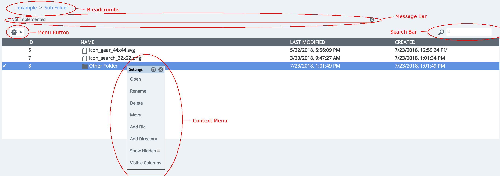

Layout

Navigation
To open a folder, double-click on the row. The browser forward and back buttons can also be used to change folders. Alternatively, if you are in a mobile browser where double-click does not work, you can right click on the row to open the "context menu" and select "Open".
The "breadcrumbs" can be click on to navigate to parent folders.
Adding Folders
Click the "menu button" and select "Add Directory". Put the name of the new directory in the prompt that opens. The new directory should appear in the file browser.
Adding Files
The are a number of ways to add files. One way is to drag and drop the file from your local system's file browser into the file browser.
If you want to add it do a folder you are not currently in, hold the file over the desired directory for without dropping it. After a few seconds, the folder should open and you can drop the file.
Moving Files/Folders
Files and folders can be move via drag and drop. Click on the file or folder and drag it over the folder you want to move it to. After a few seconds the folder should open and you can drop the file.
If the desired destination is not conveniently accessible via drag and drop, you can click on the files or folder you want to move and open the "Context Menu". Click on "Move" in the menu. A dialog will appear with a new file browser where you can choose the destination.
Deleting Files/Folders
Select the files or folders you want to delete and open the context menu. Select "Delete". A confirmation dialog will appear allowing you to confirm deletion.
Changing the Visible Columns
Open the "Context Menu" and click "Visible Columns". A dialog should appear with checkboxes for the available columns. Check the ones you want to be visible. This setting will be saved in /.config/visibleColumns to that it persists across browser sessions.
Sorting Columns
Columns can be sorted by clicking on the header for a given column.
Searching
To search, type a search query in the "Search Bar". The current directory will be recursively searched as you type. The number of results will be shown in the "Message Bar". To clear the search, remove the query from the "Search Bar".